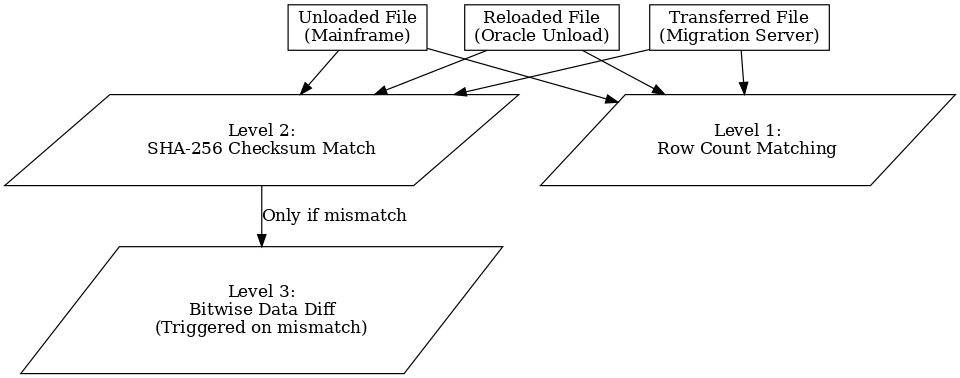
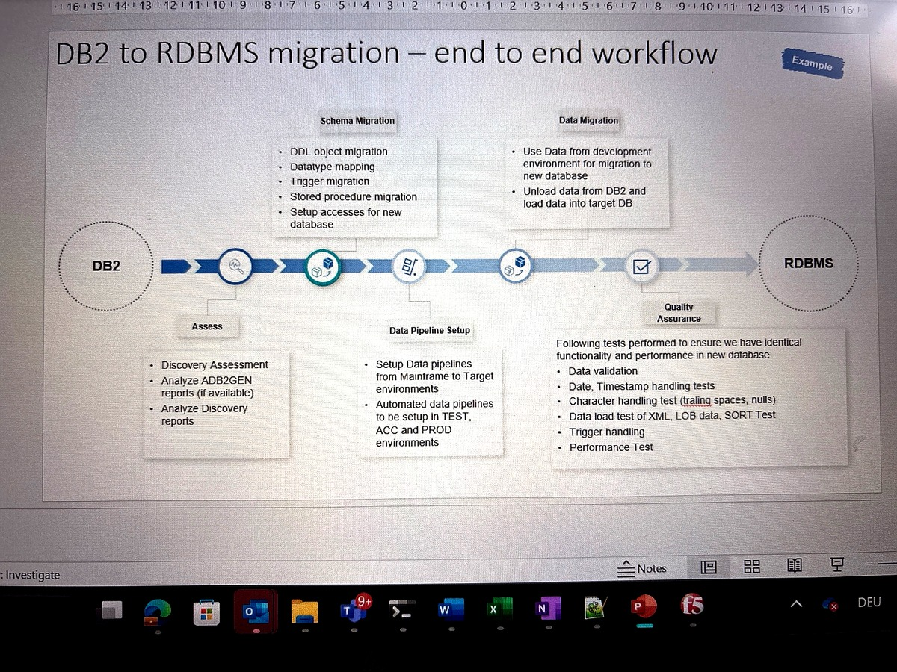
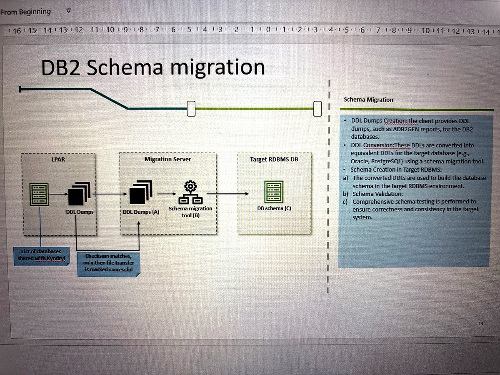
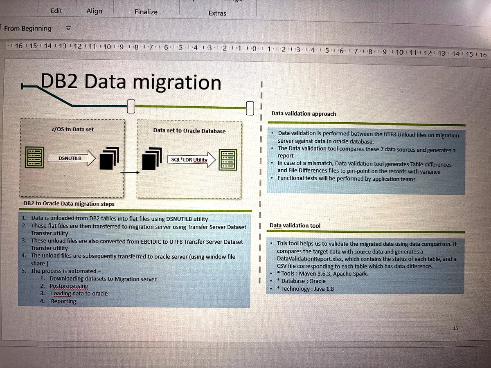
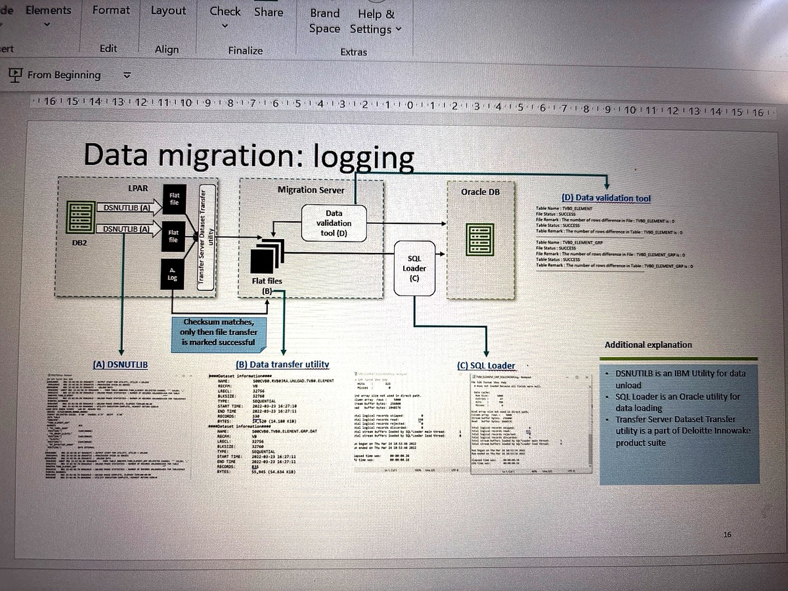
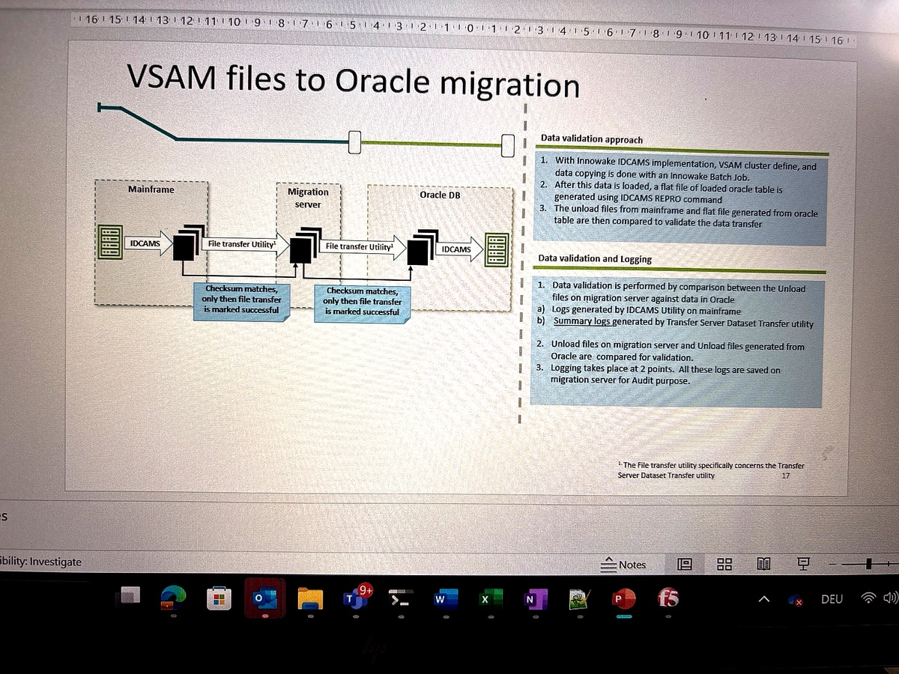
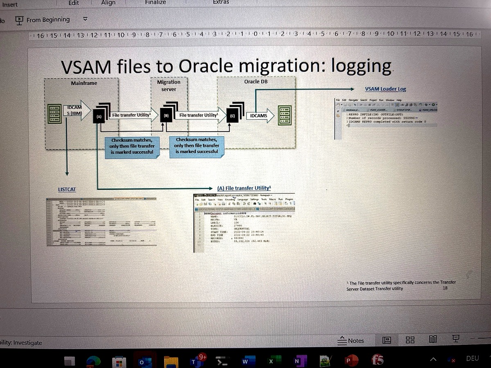
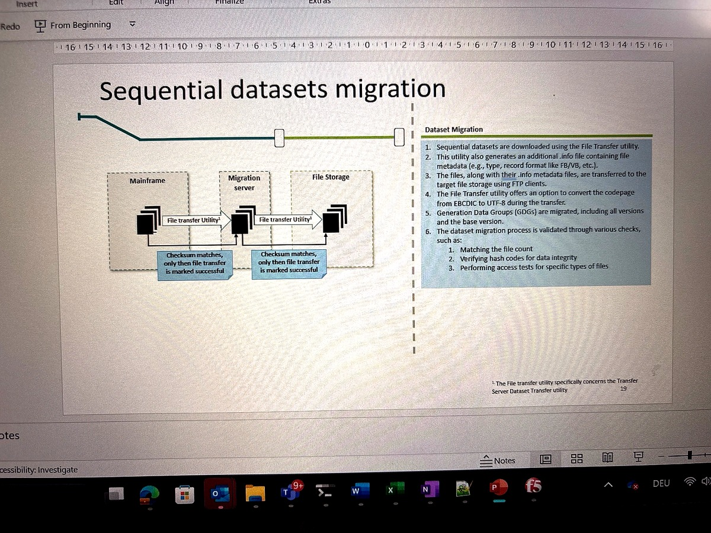
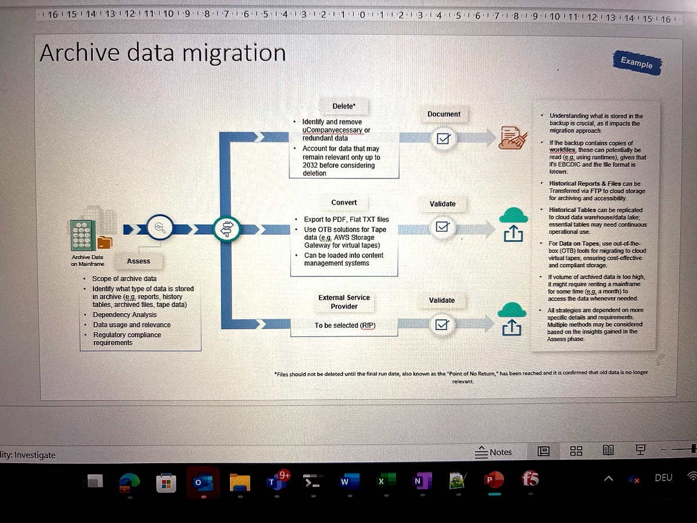

Duration: Multi-phase rollout over 2 years
Role: Lead – Data Migration Workstream
Technologies: COBOL, DB2, IMS, VSAM, Oracle, MS SQL Server, Java, Bash, Python, FTP, SQL*Loader
As part of a large-scale mainframe modernization initiative, I led the end-to-end data migration workstream for a major insurance provider in the Netherlands. This transformation involved the migration of legacy systems—COBOL, DB2, IMS, and VSAM—to modern x86 infrastructure using Java, Oracle, and MS SQL Server.
My work encompassed everything from architecture and planning to automation, testing, and go-live execution across 170 applications and three LPARs—transferring over 2500 GB of production data while ensuring accuracy, integrity, and audit traceability.
| Issue | Root Cause | Solution |
|---|---|---|
| Inconsistent Date Format | Assembler intercept on DB2 inserted dates in DDMMYY format | Developed custom Oracle function + query layer logic to reformat dates before insertion |
| Encoding Corruption | Improper EBCDIC → UTF-8 conversion introduced special characters | Moved conversion to mainframe-side using DSN Utility for clean encoding |
| Sort Order Mismatch | Mainframe vs. Oracle sort behavior differed without ORDER BY clause | Asked developers to include explicit ORDER BY clauses to mitigate discrepancies |
| Junk Characters in LOB/XML | Character data stored in binary/LOB columns on DB2 | Implemented cleansing logic using staging server and validation rules before Oracle load |
Issue: Java applications using PreparedStatement queries against migrated CHAR columns returned zero records, while direct SQL execution worked correctly.
CREATE TABLE TST_PRODUCT (
ID NUMBER(3,0),
NAME CHAR(20)
);// This works - returns records
Statement stmt = conn.createStatement();
ResultSet rs = stmt.executeQuery(
"SELECT ID, NAME FROM TST_PRODUCT " +
"WHERE NAME = 'Apple '"
);
// This fails - returns 0 records
PreparedStatement ps = conn.prepareStatement(
"SELECT ID, NAME FROM TST_PRODUCT WHERE NAME = ?"
);
ps.setString(1, "Apple");
ResultSet rs = ps.executeQuery();// Short-term fix using RPAD
PreparedStatement ps = conn.prepareStatement(
"SELECT ID, NAME FROM TST_PRODUCT " +
"WHERE NAME = RPAD(?, 20)"
);
ps.setString(1, "Apple");Issue: Multiple date formats causing SQL*Loader failures and data corruption.
| Format Name | Abbreviation | Example |
|---|---|---|
| International Standards (ISO) | ISO | 2003-12-25 |
| IBM USA Standard | USA | 12/25/2003 |
| IBM European Standard | EUR | 25.12.2003 |
| Japanese Industrial Standard | JIS | 2003-12-25 |
create or replace function clean_date
(p_date_str in varchar2)
return date
is
l_dt_fmt_nt sys.dbms_debug_vc2coll := sys.dbms_debug_vc2coll(
'DD-MM-YYYY', 'DD.MM.YYYY',
'YYYY-MM-DD', 'YYYY.MM.DD'
);
return_value date;
begin
for idx in l_dt_fmt_nt.first()..l_dt_fmt_nt.last() loop
begin
return_value := to_date(p_date_str, l_dt_fmt_nt(idx));
exit;
exception
when others then null;
end;
end loop;
return return_value;
end clean_date;-- All return '25-01-2022'
SELECT clean_date('2022-01-25') FROM dual;
SELECT clean_date('25.01.2022') FROM dual;
SELECT clean_date('01/25/2022') FROM dual;Issue: Oracle rejected inserts into GENERATED ALWAYS AS IDENTITY columns.
-- Pre-load modification
ALTER TABLE target_table MODIFY id_col
GENERATED BY DEFAULT AS IDENTITY;
-- Load data...
-- Post-load restoration
ALTER TABLE target_table MODIFY id_col
GENERATED ALWAYS AS IDENTITY;Issue: Large unload jobs failing with ABEND 722.
//UNLOAD EXEC PGM=DSNUTILB
//SYSOUT DD SYSOUT=*,OUTLIM=900000
//SYSPRINT DD SYSOUT=*
//SYSERR DD SYSOUT=*Issue: Special characters corrupted during transfer (|, ¢, [).
Code Point CCSID 037 CCSID 500
X'4F' | `
X'5A' ! ]
X'BA' ¬ `Issue: SQL*Loader control files needed progressive enhancement for performance, encoding, and constraint handling.
| Version | Date | Key Changes |
|---|---|---|
| V1 | 06.12.21 | Initial version - base loader control files |
| V2 | 28.02.22 |
|
| V3 | 12.04.22 |
|
| V4 | 24.08.22 | Added REENABLE for auto FK constraint restoration |
| Option | Purpose | Impact |
|---|---|---|
DIRECT=TRUE |
Enables direct-path loading |
|
CHARACTERSET AL32UTF8 |
UTF-8 character encoding |
|
LENGTH SEMANTICS CHAR |
Character-based length calculation |
|
TRUNCATE |
Pre-load table cleanup |
|
TRAILING NULLCOLS |
Flexible column handling |
|
OPTIONS (DIRECT=TRUE, SKIP=0, ERRORS=0)
LOAD DATA
CHARACTERSET AL32UTF8
LENGTH SEMANTICS CHAR
INFILE 'data_file.dat'
BADFILE 'data_file.bad'
DISCARDFILE 'data_file.dsc'
TRUNCATE INTO TABLE target_table
FIELDS TERMINATED BY ',' OPTIONALLY ENCLOSED BY '"'
TRAILING NULLCOLS
(
id POSITION(1:10),
name CHAR(50),
birthdate DATE "YYYY-MM-DD",
status DECODE(:"STATUS",
'A', 'ACTIVE',
'I', 'INACTIVE',
'UNKNOWN')
)Issue: Need to extract large volumes of DB2 z/OS data while maintaining data integrity and handling EBCDIC encoding.
//UDPRC1 PROC
//* STEP 1: UNLOAD TABLE DCVONOP.TVB0_ELEMENT
//STEP1 EXEC PGM=DSNUTILB,PARM=(DACC,'UNLOAD')
//STEPLIB DD DSN=SYS1.DSNDPRD.P1.SDSNLOAD,DISP=SHR
//SYSREC DD DSN=TEST.RVB0JRA.UNLOAD.TVB0.ELEMENT,
// DISP=(NEW,CATLG,CATLG),
// UNIT=SYSDA,SPACE=(CYL,(50,500))
//SYSPUNCH DD SYSOUT=*
//SYSPRINT DD SYSOUT=*
//UTPRINT DD SYSOUT=*
//SYSUDUMP DD SYSOUT=*
//SYSIN DD *
UNLOAD DATA
FROM TABLE DCVONOP.TVB0_ELEMENT
DELIMITED CHARDEL "" COLDEL ','| Parameter | Value | Purpose |
|---|---|---|
PGM=DSNUTILB |
DSNUTILB | IBM's high-performance DB2 utility for batch operations |
PARM=(DACC,'UNLOAD') |
DACC + UNLOAD | Specifies DB2 subsystem and unload function |
SPACE=(CYL,(50,500)) |
50 primary, 500 secondary | Dynamic space allocation in cylinders |
DELIMITED |
COLDEL=',' CHARDEL="" | CSV format without string delimiters |
//SYSUDUMP DD SYSOUT=* /* For abend diagnostics */
//UTPRINT DD SYSOUT=* /* For utility messages */
//SYSPRINT DD SYSOUT=* /* For detailed progress */I implemented a rigorous 3-step validation framework to ensure accurate and auditable data migration:
This strategy helped reduce unnecessary full-file comparisons while maintaining high confidence and compliance with audit policies.
Legacy modernization is not just about converting data formats—it’s about understanding how old systems worked in production, and creating solutions that preserve business logic and performance behavior. Most importantly, migration must be auditable and repeatable. Also it is not just about COBOL to JAVA conversion, or DB2 to Oracle migration, these are the tip of an iceberg. The real challenge lies in the details: data formats, encoding issues, sort orders, and special data types like LOBs and XML. Also in the related integration points like assembers, custom implementaiton, batch jobs, schedulers , End user Developed Applications, etc.
This project taught me how to think beyond code—to architect systems, lead teams, and deliver on timelines where both performance and integrity are non-negotiable.